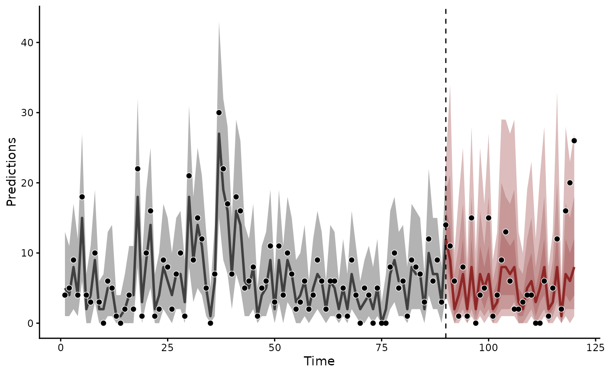
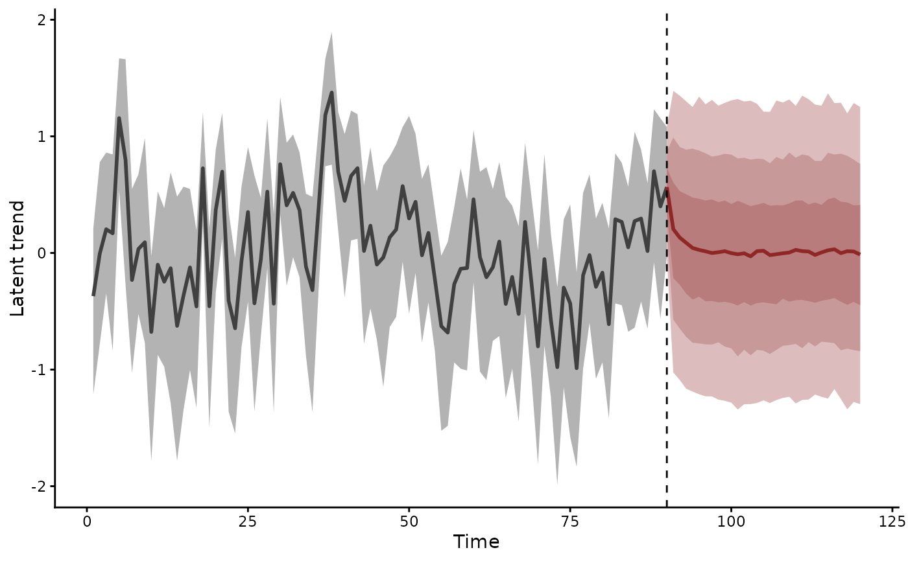
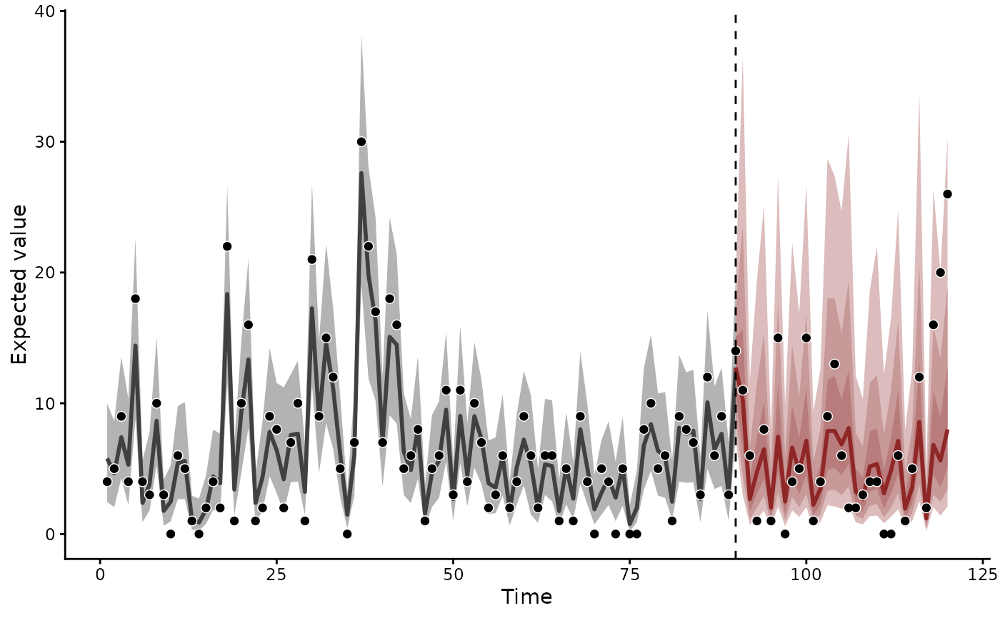

Posterior forecasts at future time points, with posterior hindcasts at the training time points. Each draw propagates the fitted latent state through the trend's dynamics. The observation family then maps the trend to the response scale.
Arguments
- object
A fitted mvgam object.
- newdata
Optional
data.framewith the columns of the training data, holding the time and series cells to forecast. Rows with times beyond the training grid set the horizon. WhenNULL,forecast()uses the held-out data given tomvgam(newdata = ). A fit without held-out data needsnewdata.Five trends step once per time point: AR(), RW(), VAR(), LLT() and PW(). Their forecast times must continue the training series at its own spacing, without a gap. After training ends at
t = 30, a request fort = 41:42is refused: two rows would report a two-step spread for a twelve-step horizon. Supply every intervening time, whether or not the response is observed there.CAR()takes the elapsed gap into its kernel. Each series may have its own forecast times, all after the last fitted time.ZMVN()has no temporal dynamics and takes any later times.ZMVN()andPW()need one set of forecast times shared by every series.- ...
Unused. Anything passed here is refused.
- type
The scale of the draws:
"response"(the default) samples from the observation family."expected"returns the family's mean. A binomial mean istrials * pand a zero-inflated mean is(1 - zi) * mu."link"returns the linear predictor on the link scale."trend"returns the latent trend on the link scale.
- component
NULL(the default) for the summed trend, or the names of state components of the trend, withtype = "trend". Several names give the sum of their components.LLT()has"level", the stochastic level, and"slope", its growth per time step. A seasonalLLT()adds"season"."predictor"holds the effects of the trend formula's covariates.c("level", "predictor")gives the level with those effects. A factor model projects each component through its loadings, as it projects the trend. The result is an ordinary mvgam_forecast-class with the components in itscomponentslot.- ndraws
Positive integer specifying number of posterior draws to use. NULL (default) uses all available draws.
- draw_ids
Optional integer vector selecting a subset of posterior draw indices to use. NULL (default) uses all draws (subject to
ndraws).- coef_uncertainty
Logical. When
FALSE, every forecast draw uses the first of the drawsndrawsordraw_idsselect for every coefficient in the observation and trend formulas: population-level effects, smooth bases, random effect levels and Hilbert-spacegp(x, k)bases. Defaults toTRUE.- trend_uncertainty
Logical. When
FALSE, every forecast draw uses the first of the selected draws for the trend dynamics parameters (sigma, AR, MA and VAR coefficients), the last fitted state and the trend formula's predictormu_trend. Each draw still takes fresh innovations. The spread then shows innovation noise alone. Defaults toTRUE.- obs_uncertainty
Logical. When
FALSE, skips observation-family sampling fortype = "response", returning the family mean instead. Defaults toTRUE.- resp
Character specifying which response variable for multivariate models. NULL (default) returns predictions for all responses.
Value
An object of class mvgam_forecast-class.
Hindcasts and forecasts are returned as named lists of
[ndraws, n_times] matrices, one per series.
See also
hindcast.mvgam() returns the fitted latent states.
posterior_predict.mvgam() and posterior_epred.mvgam() predict
by integrating over the trend's stochastic dynamics. forecast()
extrapolates the fitted latent state. score.mvgam_forecast()
scores a forecast against held-out data. The
forecast evaluation article
scores, compares and combines the forecasts of three models of
rodent counts.
Other forecasting:
compare_scores(),
ensemble.mvgam_forecast(),
hindcast.mvgam(),
lfo_cv.mvgam(),
score.mvgam_forecast()
Examples
# \dontrun{
set.seed(11)
simdat <- sim_mvgam(family = poisson(), n_series = 1L,
n_timepoints = 120L, trend_model = AR(),
proportional_train = 0.75)
mod <- mvgam(
y ~ s(x),
trend_formula = ~ AR(p = 1),
data = simdat$data_train,
newdata = simdat$data_test,
family = poisson(),
chains = 2, silent = 2
)
#> Warning: 386 of 2000 (19.0%) transitions ended with a divergence.
#> See https://mc-stan.org/misc/warnings for details.
# The held-out data given to mvgam() set the forecast horizon
fc <- forecast(mod)
plot(fc)

# The latent AR(1) trend alone, on the log scale
plot(forecast(mod, type = "trend"))

# The expected counts, without the Poisson sampling noise
plot(forecast(mod, type = "expected"))

# Next, score the forecast against the held-out counts
head(score(fc, score = "crps")[[1]])
#> score in_interval interval_width eval_horizon score_type
#> 1 1.8327820 1 0.9 1 crps
#> 2 1.9730375 1 0.9 2 crps
#> 3 2.5622158 1 0.9 3 crps
#> 4 1.3601955 1 0.9 4 crps
#> 5 0.6947603 1 0.9 5 crps
#> 6 3.9339607 1 0.9 6 crps
# }